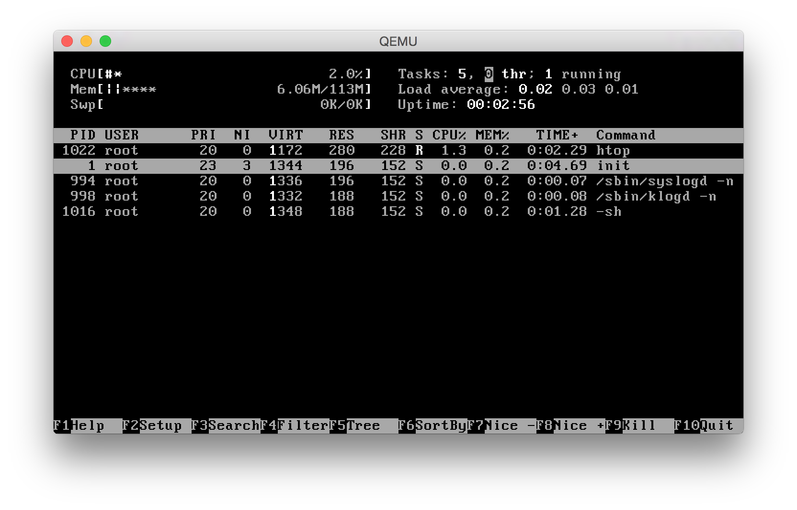
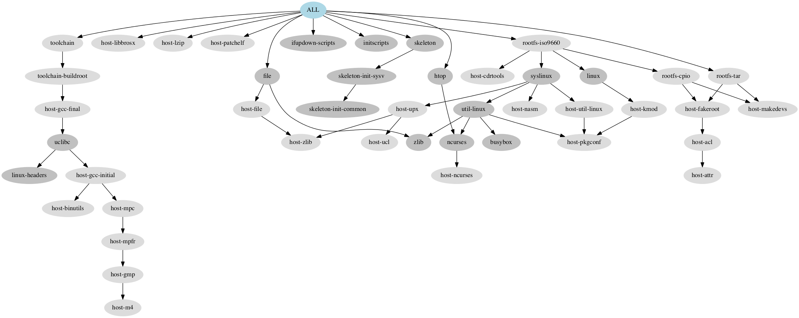

Buidroot OSX - Use Buildroot on OSX natively.
With Buildroot OSX you can run a Buildroot environmet natively on your Apple OSX system. You can have a cross compile environment directly on your Mac without beeing forced to wrap a Linux system first into a virtual machine. There is not need to setup up a Linux container like Valgrind, Docker or VirtualBox. You can simply use your Mac development tools and file system as they are.
This is achieved by
Currently, the build creates an ISO system image with Busybox that can start from Qemu or VirtualBox.
The Buildroot make system expects some basic tools to be available as described in the "Mandatoy packages" section of the Buildroot "System Requirements".
We need the following tools:
Most of the tools might be already available on your Mac, but we need the GNU based versions to reduce incompatibilities compared with a Linux system. You can find them directly on the GNU ftp server at http://ftp.gnu.org/gnu/ or use any package manager to install them on your Mac. In this guide we use Homebrew - The missing package manager for macOS to fulfil this task.
Since the Linux build requires a case sensitive file system, the native "Mac OS Extended" file system is not sufficient. We need to create an image that holds all build artefacts.
hdiutil create -size 20g -type SPARSE -fs "Case-sensitive HFS+" -volname brosx brosx.sparseimage
hdiutil attach brosx.sparseimage
In the build environemt we use the following directory structure. The names in braces refer to envirnment variables used in this guide.
/Volumes/brosx # mounted image root (BROSX_ROOT)
├── buildroot # home folder with buildroot git project is checked out (BROSX_HOME)
└── toolchain # links to the Xcode toolchain wrapper (BROSX_TOOLCHAIN)
└── tools # links to binaries of other required tools (BROSX_TOOLS)
After mounting the file system, we can enter the build root folder and clone the Buildroot OSX repository and checkout desired branch, e.g.
cd /Volumes/brosx
git clone git@github.com:generia/buildroot.git
cd buildroot
git checkout osx10
Configure the build tools as they are installed on your Mac. There is a template at support/brosx/brosx.sh in the repository that helps to setup the environent. The configuration shown in that template was actually used to run the Busibox build.
cp /Volumes/brosx/buildroot/support/brosx/brosx.sh /Volumes/brosx
The shell setup template is split into three parts. The first part defines basic folder variables. The second defines all variables that refer to the necessary tools installed on your Mac. These tools have been installed as described before. The second part contains some helper logic that configures the PATH and sets up links that the tools can be found properly.
The basic folder variables are
BROSX_ROOT=/Volumes/brosx
BROSX_HOME=$BROSX_ROOT/buildroot
BROSX_TOOLS=$BROSX_ROOT/tools
BROSX_TOOLCHAIN=$BROSX_ROOT/toolchain
The tool variables follow four certain patterns that are used by the setup logic.
1. BROSX_<tool>_CMD=<tool-installation-file>
2. BROSX_<tool-set>_HOME=<tool-set-installation-folder>
3. BROSX_<tool-set>_GHOME=<gnu-prefixed-tool-set-installation-folder>
3. BROSX_TOOLCHAIN_CMD_<tool>=<tool-installation-file>
BROSX_TOOLS.PATH.$BROSX_ROOT/opt/<tool-set>/bin. The tool-set folder with those links will be added to the PATH.toolchain-wrapper-xcode.sh. This wrapper determines the link target via the variable value. Before calling the actual compiler tool the arguments are parsed to filter out arguments not known to Xcode.To aid debugging the toolchain wrapper supports logging. The logging can be turned on/off by defining a log file.
BROSX_TOOLCHAIN_WRAPPER_LOG_DIR=$BROSX_HOME/ouput/build
# leave log-file empty to turn logging off
#BROSX_TOOLCHAIN_WRAPPER_LOG_FILE=
BROSX_TOOLCHAIN_WRAPPER_LOG_FILE=$BROSX_TOOLCHAIN_WRAPPER_LOG_DIR/.toolchain-wrapper-xcode.log
After setting up all required locations in brosx.sh, you can start a clean shell and source the setup
# NOTE: bash version 4.x required
env -i bash --noprofile --norc
source /Volumes/brosx/brosx.sh
The build shell environment is now ready to use.
The build on OSX does not cover all packages. So far the build works for a default builtroot busybox configuration based on Linux kernel 4.10.16 with some extensions for iso image generation and some simple target tools, like file or htop. See graph diagram below for involved packages.
The test build can be reproduced with the defconfig
make defconfig BR2_DEFCONFIG=support/brosx/configs/brosx_busybox_iso_defconfig
Running make will start the full build
make
The result will be in 'output/images/rootfs.iso9660'
qemu-system-i386 -cdrom output/images/rootfs.iso9660
The result will look like 
The involved packages are visualized via graph-depends and look as follows: 
It was tested on
TBD.